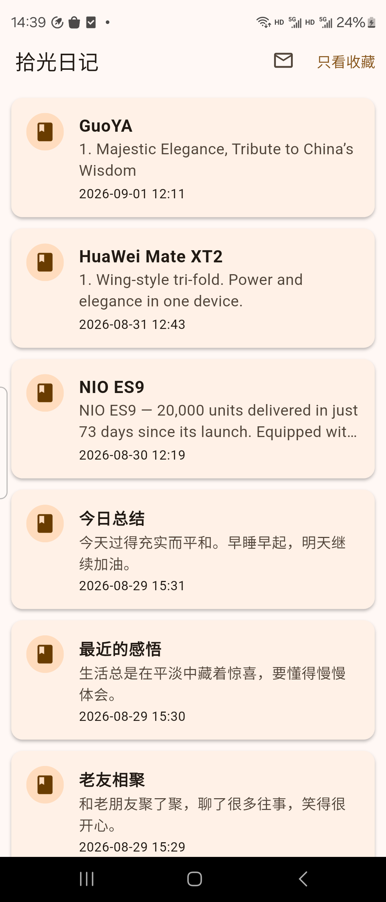
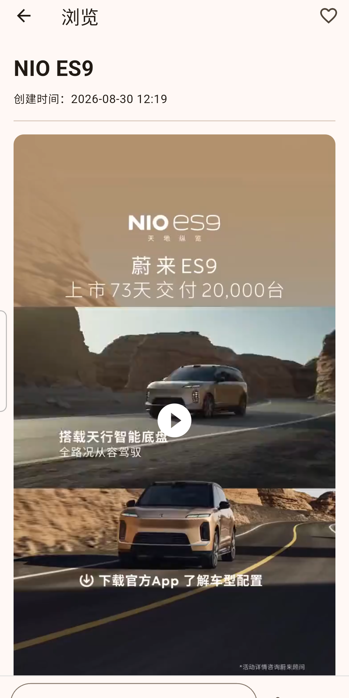
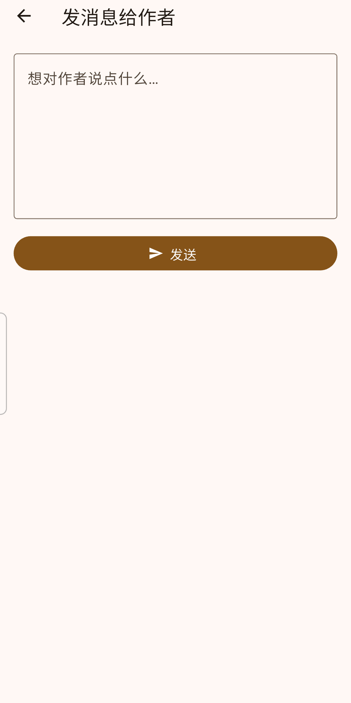

یک اپلیکیشن روزنامهٔ گرم و ساده — روزنامهها را بخوانید، نظر دهید، به علاقهمندیها اضافه کنید و لهجههای شانگهای/نینگبو را بشنوید. با داستانهای واقعی از خودروهای برقی (NIO ES9، BYD، XPeng، Zeekr، Li Auto) و گوشیهای چینی (Huawei، Xiaomi، OPPO، vivo، Honor).
اندروید: «نصب از منابع ناشناس» را مجاز کنید. iOS: لینک TestFlight بهزودی.



روزنامههای شانگهای و نینگبو · v1.0.0